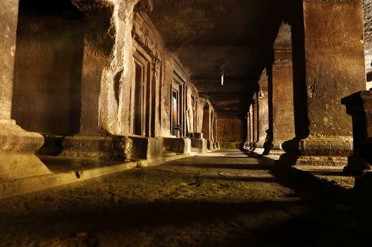

D E S T I N A T I O N S
Shanivar Wada
Standing tall in its full glory, Shaniwar Wada was once a stately mansion. Built as a dwelling for Peshwas, its foundation was laid by Bajirao I in year 1730 AD.
LocationAga Khan Palace
Aga Khan Palace is well known both for its architectural excellence as well as its historical significance. Spread over a vast land of 19 acres, the palace is now the headquarters of the Gandhi National memorial society.
Location
Sinhagad Fort
Located around 36 kms southwest of the city of Pune, Sinhagad Fort is built atop a cliff on the Bhuleshwar range of the Sahyadris. Literally translating to "Fort of the Lion", Sinhagad Fort boasts of a rich history
Location
Khadakwasla Dam
Khadakwasla Dam is a famous tourist in Pune. The dam forms a reservoir, called Khadakwasla Lake which offers a quick and pleasant getaway too.
Location

The Pataleshwar Caves
The Pataleshwar Caves, also referred to as the Panchaleshvara temple or Bhamburde Pandav cave temple, are an 8th century rock-cut Hindu temple from the Rashtrakuta period located in Pune
LocationLal Mahal
In the year 1630 AD, Shivaji Maharaj's Father Shahaji Raje Bhosale, established the Lal Mahal for his wife Jijabai and son. The current Lal Mahal is a reconstruction of the original and located in the center of the Pune city.
Location